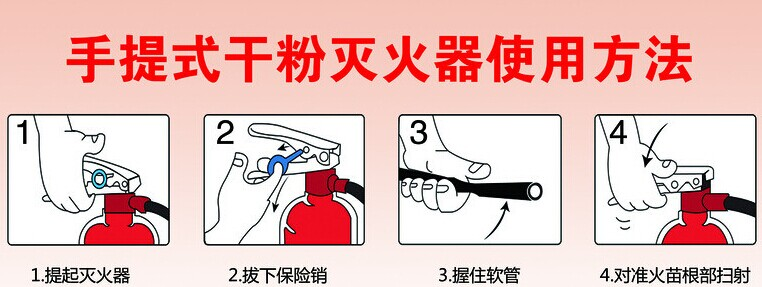
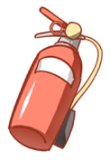
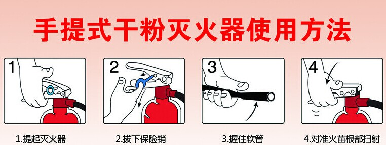

干粉灭火器(常见的灭火器)
用途：
1）干粉灭火器可扑灭一般的火灾，还可扑灭油，气等燃烧引起的失火。
2）主要用于扑救石油、有机溶剂等易燃液体、可燃气体和电气设备的初期火灾。
使用方法：
1）拔掉安全栓，上下摇晃几下。
2）根据风向，站在上风位置。
3）对准火苗的根部，一手握住压把，一手握住喷嘴进行灭火。




1）干粉灭火器可扑灭一般的火灾，还可扑灭油，气等燃烧引起的失火。
2）主要用于扑救石油、有机溶剂等易燃液体、可燃气体和电气设备的初期火灾。
1）拔掉安全栓，上下摇晃几下。
2）根据风向，站在上风位置。
3）对准火苗的根部，一手握住压把，一手握住喷嘴进行灭火。
